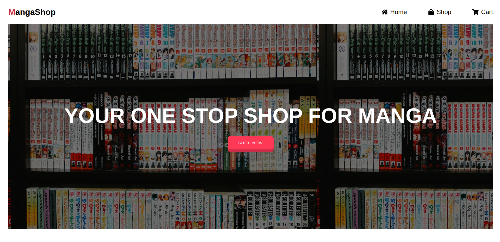

MangaShop
Scope
Timeline
May 2025 - June 2025
Role(s)
- React Developer
Overview
MangaShop is an mock e-commerce app that simulates a real shopping app that you would find anywhere. This project aim to encapsulates the key elements of what is possible with React on a basic level .
Tools
- Vite: scaffolding a React project
- React Router: page navigation
- CSS Modules: locally scoped CSS modules to style each component
- Fetch API: making HTTP requests
Features
- SPA-like Navigation: eliminate the need of routing to multiple HTML files with React Router's routing
- Simulating Multi Page Fetching: Using Jikan's API query end-points and Fetch API to fetch new data as user navigate to the next or previous pages as user shops
- Adding Items Into Cart: users can add different numbers of mangas and the cart will calculate the total sum
Problems
- State Management: The component hierarchy for this project is quite simple: one main
Appcomponent hosts the navigation bar and anOutletcomponent that renders depending on the route. Each states used to exists within its parent component that gets rendered by theOutletcomponent. However, this quickly becomes a problem when states need to be shared across different routes. The quickest solution in this case is the host all states in theAppcomponent and pass states down to child components with thecontextprop and access them withuseOutletContext() - Strict Mode: causes the targeted component to re-render one extra time to catch any impure re-rendering. However, this has also caused my component to fetch the API one more time, which exceeded the rate limit of Jikan API. Removing strict mode resolved this issue swiftly, but for future projects I will look into this problem more critical.
Takeaway
Overall, I think this was close to what I would call a React capstone project as of now. This project made me realize how a state manger such as Redux can come in handy and managing API fetch is important if we do not want performance overhead in a React app.